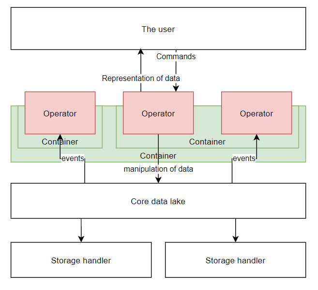

Polymorph's organisational ethos
Polymorph was founded on the basis that the user should decide what user interface works for them, rather than
working for the interface.
As a consequence of this, polymorph is segmented as follows:

Yes, the user-chooses ethos does come at the cost of the initial inconvenience of setting up a workflow, but
polymorph does its best to make the process simple for the user.
Definitely have a play around, and see which operators you prefer! Also check out the tutorial, accessible from the
top bar.